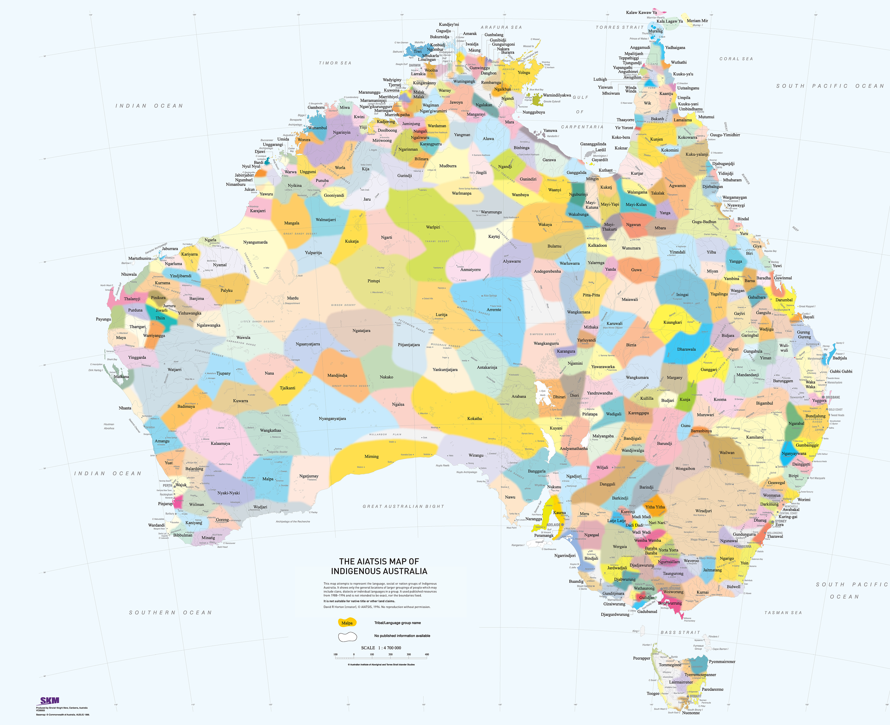

☰
🏚️
🗺️
🗺️
👥
👥
Home
FeedCrumbs
CrumbsMap
Crumbings
OZvent
Search
All
Runes
Crumbings
OZVents

Basemap
Standard
Satellite
Terrain
Layers
Indigenous Regions
Cultural Landmarks
Administrative Boundary
Zoom
Zoom Out
Zoom In
Level:
10
Quick Views
Nearest Cultural Cuisine
Nearest OZVents
Nearest Popular Runes
Actions
Export Map
Reset View